UDN
Search public documentation:
CapturingCinematicsAndGameplayKR
English Translation
?�本語訳
�?��翻译
Interested in the Unreal Engine?
Visit the Unreal Technology site.
Looking for jobs and company info?
Check out the Epic games site.
Questions about support via UDN?
Contact the UDN Staff
?�本語訳
�?��翻译
Interested in the Unreal Engine?
Visit the Unreal Technology site.
Looking for jobs and company info?
Check out the Epic games site.
Questions about support via UDN?
Contact the UDN Staff
?�네마틱�?게임?�레??캡처?�기
문서 변경내?? Jeff Wilson ?�성; ?�성�?/a> 번역.
- ?�네마틱�?게임?�레??캡처?�기
- ?�시�?캡처?�기
- 개요
게임???�상 캡처 기능?� 게임??공개?�으�??�보?�는 ??매우 중요????��???�나, 게임 개발 과정?�서 종종 간과?�고 ?�습?�다. 게임???�상 캡처?�, ?�제 게임 ?�레???�면??미리 ?�화?????�네마틱, ?�는 멋진 기능 뽐내�??�으�?만든 비디?��? 말합?�다. ?�진 ?�체?�서 ?�공?�는 기능??뭐�? ?�는지 ?�아?? ?�탄???�업방식???�해?? ?�차! ?��? 부분을 미리 ?�고 ?�할 �??�아???�체 과정???�씬 ?�조�?�� ?�간 ?�약?�며 ?�통 ?�이 ?�?�낼 ???�을 것입?�다. 게임 ?�상??캡처?�는 ???�용가?�한 ?�션?� 몇�?지 ?�습?�다. ?�떤 방법?�로 ??것인지??결국 비디?�의 최종 ?�용�?�??�용?????�는 ?�드?�어?� ?�프?�웨??리소?�에 ?�르�??�니??
?�레??캡처?�기
?�리?�에?�는 게임???�행????명령�??�션???�절??지?�해 주기�??�면 개별 ?�레?�을 캡처?????�습?�다. ?�진 ?�체??게임???�정 ?�레?�율�??�행?�키�?�??�더링된 ?�레?�을 미압�?.BMP ?��?지�?출력?�는 기능???�습?�다. ??기능???�상?��? ?�정?�고 ?�동???�릴 맵을 지?�하??명령??붙여주면, 부?�럽�??�행?�면?�도 ?�상?��? 매우 ?��? 게임 ?�상???�을 ???�습?�다. 게임?�서 ?�정 맵을 ?�리?�면, 맵의 ?�름???�행?�일???�달?�야 ?�니?? ?�네마틱 ?�퀸스�?캡처 ?�는 ?�스?�이 ?��??????�는 것보??고해?�도???�상???�정 ?�레?�율�??�더링하?�록 캡처?�려??경우, 캡처?�려???�벤???�퀸스�??�벨???�작?????�동?�로 ?�행?�도�??�정???�야 ?�겠?�니?? ?��? ?�어 캡처?�려???�네마틱 ?�퀸스가 ?�함??UDN_FeaturesDemo.udk 맵이 ?�을 경우, ?�음�?같이 ?�행?�면 ?�니??UDK.exe UDN_FeaturesDemo??과정?�서 ?�용??명령�??�수 ???�음�?같습?�다:
- ResX= - 게임 창의 가�??�상?�입?�다.
- ResY= - 게임 창의 ?�로 ?�상?�입?�다.
- BENCHMARK (벤치마크) - ?�레???�략 ?�이 모든 ?�레?�을 처리?�는 고정 ?�계�?게임???�행?�니?? DUMPMOVIE ?�션�??�께 ?�기??좋습?�다.
- DUMPMOVIE (?�프무비) - ?�재 게임 ?�상?��? ?�용?�여 ?�더링된 ?�레?�을 ?�일�??�아붓습?�다.
- DUMPMOVIE_TILEDSHOT=X (?�프무비 ?�?�샷) - "DUMPMOVIE" ?� 비슷?��?�? �??�레?�을 초고?�상?�용 ?�?�샷?�로 캡처?�니?? (?�일???�청 ?�테?? 2 부???�작??보십?�오)
- NOTEXTURESTREAMING (?�스�??�트리밍 ?�음) - ?�스�??�트리밍???�니?? ??�� 최고?�질 ?�스처만 로드?�니??
- MAXQUALITYMODE (최�? ?�질 모드) - ?�포먼스�?고려�??�고 ?�정 ?�스???�정??최고?�질�???��?�니??
UDK.exe UDN_FeaturesDemo -BENCHMARK -MAXQUALITYMODE -NOTEXTURESTREAMING -DUMPMOVIE -FPS=30 -ResX=1280 -ResY=720?�런 ?�으�?게임???�행?�킬 ?? ?�퀸스???�작�??�에 ?�상???�레?�이 ?�이??것을 �????�습?�다. 개별 ?��?지?�니, 별로 걱정???�요 ?�이 ?�더링이 ?�나�?그냥 지?�버리면 ?�겠?�니?? 결과 ?��?지 ?�일?� 게임???�치???�더??Screenshots ?�렉?�리???�어가�??�니?? UDK ?�용?�에 ?�?�선, ?�렇?�니??
C:\UDK\UDK-2010-08\UDKGame\ScreenShots출력 경로??*Engine.ini ??[Core.System] 부분에???�정?????�습?�다. ?�로 UDK??UDKEngine.ini?�는:
ScreenShotPath=..\..\UDKGame\ScreenShots?�제로는 ?�반 버전??가�?BaseEngine.ini 로�???빌드?�니?? ?�레?�이???�크린샷 출력 ?�렉?�리�??�구?�으�?바꾸�??�으�? BaseEngine.ini ?�일??바꾸�??�니?? ?�시�?바꾸?�면 [게임�?Engine.ini ??변경하�??�니?? ?�일 ?�름?� MovieFrame*.bmp ?�이�? *???�당 ?��?지???�레??번호�??��??�는 5?�리 ?�자?�니?? ?�일 ?�름?� ??�� 같을 것이기에 캡처가 ?�나??마자 ?��?지�??�른 ?�더�???��지 ?�으�??�이거나 ??��?�이�????��? ?�습?�다. 경고: ??방법?� 미압�??�일???�루기에, ?�요???�스???�유 공간???�청?�니?? 캡처?�려???�퀸스 길이???�라, ?�십 기�????��?지 ?�는 비디???�일???�길 ???�습?�다.
?�운??캡처?�기
?�디?��? 캡처?�기 ?�해?�는 ?�프?�건 ?�드�??�시�?캡처 방법???�용?�야 ?�니?? 그리고서 ?�디?��? ?�기 ?�해 ?�네마틱???�시 ?�생?�면 ?�니?? ?�레???��?가 가?�할지???�??것�? 걱정???�요가 ?�습?�다. ?�디?�만 ?�면 ?�니 ?�주 ??? ?�상?�로???�리기만 ?�면 ?�니?? ?�로 ?�음�?같�? 명령???�리�??�니??UDK.exe UDN_FeaturesDemo -ResX=320 -ResY=180Audacity 같이 컴퓨?�에???�디?�만 캡처?�는 ?�플???�런 경우???�이겠습?�다. ?�무???�반 캡처 ?�로그램?�로 비디?��? ?�디?��? ?�일�?캡처?????�중???�요???�라 ?�디?��? 비디?�에??분리?�켜???�니?? ?�기?�는 Audacity�??�로 ?�어 보겠?�니?? 먼�? Audacity ?�치�??�야겠죠. ?�기??/a> ?�운받아 ?�치?�니?? Audacity가 ?�치?�고?�면 ?�로그램???�행?�니??
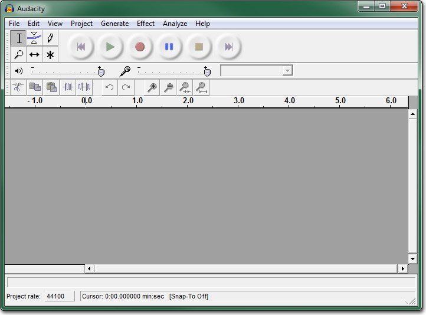
Edit 메뉴?�서 Preferences ?�?�창???�운 ?�음 Audio I/O ??�� ?�택?�니?? Recording Device(?�화 ?�치)???�피�? ?��? ?�어 Stereo Mix (Realtek High Definition) �??�정?�고, Number of Channels(채널 ????2 (Stereo) �??�정?�니?? Audacity?�테 ?�운?�카?�에??바로 ?�테?�오�??�화?�라�??�는 겁니?? 변경사???�?�을 ?�해 _OK_�??�릅?�다.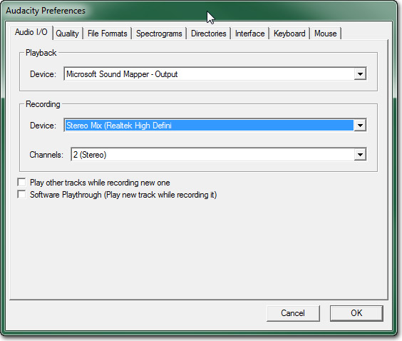
?�운??카드???�디??캡처�??�작?�려�? 버튼???�르기만 ?�면 ?�니?? Audacity???�업공간??2채널 ?�디???�랙???��??�고 ?�디?��? 캡처?�면???�크롤되�??�작?�니??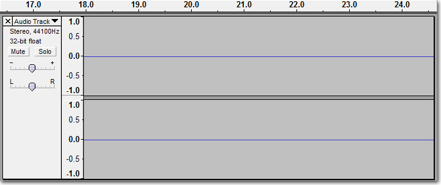
?�?�상?????�생 캡처�??�작?�려�??��? 같�? 명령???�리??��??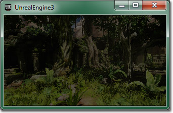
?�디??캡처�??�내?�면 ?�의 ?�생???�난 ?? 버튼???�르??��?? Audicaty ?�업공간 ?�에 ?�전??캡처???�디???�랙???�습?�다.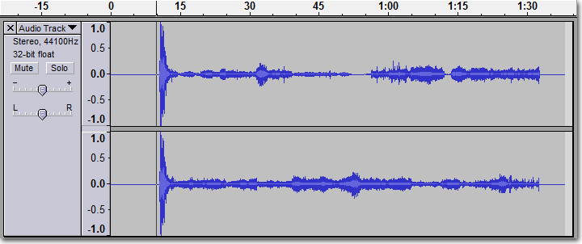
?�제 File 메뉴?�서 Export As WAV �??�택?�고, ?�치?� ?�일명을 ?�하고서 Save �??�르�?캡처???�디?��? ?�일�??�?�합?�다.?�운???�집?�기
?�디?��? ?�로 캡처?�야 ?�기?? 결과 ?�디???�일?� 캡처??비디?��? ?�크가 맞�? ?�을 ???�습?�다. ?�한 ?�디???�일 ?�작 �??�는 ?�에 불필?�한 부분을 지?�줘?????�도 ?�습?�다. ?�디???�일 ?�집?� Audacity 같�? ?�집 ?�로그램???�용?�면 꽤나 간단???�입?�다. �??�에???�용?????�는 ?�디???�집 ?�로그램?� 많이 ?�습?�다�? ?��? ?�디?��? 캡처?�는 ??Audacity�??�용?�고 무료 ?�로그램?�기???�니, ?�기??초점??맞추겠습?�다. ?�기??기본 개념?�, ?�제�?비디?�에???�운?��? ?�작?�는 지?�이 ?�디?��? ?�아?�야 ?�니?? 그리고나??캡처??비디?�의 ?�레???�에???�디?��? ?�마??길어???�는지 겉잡?�볼 ???�습?�다. ?��? ?�어 ?�기?�는 2457 ?�레?�이 캡처?�었?�니?? 30fps 비디?�에?�는 1�?21.9초�? ?�이?? ?�디?�도 1�?21.9�?분량???�요?�니?? Audacity?�서 ?�디??부�??�택?� 좌클�?���??�이브형?�로 마우?��? ?�어 가?�합?�다. ?�디???�작?�을 찾아?�면 좌클�?���??�른쪽으�??�기 ?�작?�니?? �??�래 ?�태�?/em> �??�해 ?�택 범위?� �??�택 길이가 ?�시?�니?? ?�체 ?�디???�립???�택?�을 ?�도 ??부분을 ?�해 ?????�습?�다.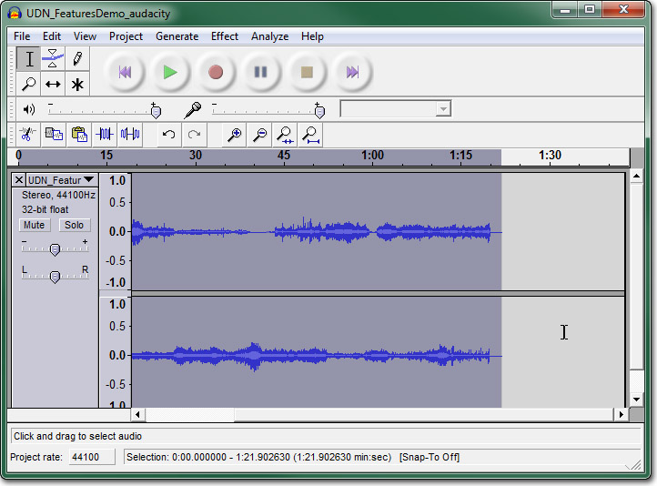
?�디?��? ?�택???�태�?Ctrl + C �??�러 복사�??�니?? 그리고서 ?�업공간???�는 ?�랙 ?�래�??�릭?�고??Ctrl + V �??�러 ???�랙??붙여 ?�습?�다. ?�제 ?�당 ?�랙??
?�제 ?�당 ?�랙?? 버튼?�로 ?�리지???�랙??지?�도 ?�니??
File 메뉴?�서 Export As WAV �??�택?�고, ?�치?� ?�일명을 ?�택???�음 _Save_�??�르�??�리???�디?��? ?�일�??�?�합?�다. ?�돌?��????�시 ?�업?�야 ???�도 ?�으???�본 ?� 캡처 ?�일 ?�름�??�르�??�십?�오.
버튼?�로 ?�리지???�랙??지?�도 ?�니??
File 메뉴?�서 Export As WAV �??�택?�고, ?�치?� ?�일명을 ?�택???�음 _Save_�??�르�??�리???�디?��? ?�일�??�?�합?�다. ?�돌?��????�시 ?�업?�야 ???�도 ?�으???�본 ?� 캡처 ?�일 ?�름�??�르�??�십?�오.
?�레?�과 ?�운???�성?�기
?��?지 ?�레?�을 ?�일 비디???�일�??�성?�고 ?�디??캡처 ?�일??비디?��? 병합?�려�? ?�성 ?�는 비디???�집 ?�로그램???�요?�니?? 비디???�집 ?�품군�? 많이 ?�는?? ?�부�?꽤나 비쌉?�다. ?�디?��? 비디?��? 별개�??�간?�에???�고 ?�어???�치?�킬 ???�는 비선???�집 ?�플???�성?�기???�입?�다. ?�무??VirtualDub???�한 ?�순?�면?�도 무료???�체법???�습?�다. 지�??�리가 ?�려???��?지 ?�퀸스?� ?�디?��? ?�일 비디???�일�??�성 ?�업????맞는 강력???�성 ?�플�? ?�중???�양??코덱???�용?�여 비디?��? ?�코?�하???????�도 ?�습?�다. 먼�? VirtualDub???�치?�니?? ?�기??/a> ?�운받을 ???�습?�다. ?�치?�고?�서 ?�행?�킵?�다.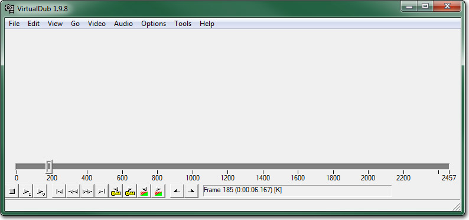
File 메뉴?�서 Open Video File ???�택?�니?? ?�일 ?�?�창???�면 ?�더링된 ?�레?�의 �??��?지 ?�치�?찾아 ?�택?�니?? ?�기?�는 MoveiFrame00003.bmp ?�니?? Open ???�릭?�면 ?�체 ?�퀸스가 VirtualDub??로드?�니?? ?�간?�을 문질??보면 ?�게 맞는지 ?�인??�????�습?�다.
Open ???�릭?�면 ?�체 ?�퀸스가 VirtualDub??로드?�니?? ?�간?�을 문질??보면 ?�게 맞는지 ?�인??�????�습?�다.
 Audio 메뉴?�서 Audio from another file ???�택?�니?? ?�리???�디??캡처 ?�일??찾아 ?�택?�고, Open ???�러 로드?�니??
VirtualDub?�서 비디?��? ?�생??보면 ???�점?�서 비디?��? ?�디?��? ??맞나 ?�인??�????�습?�다. 맞�? ?�으�?Audacity ?�업??추�?�??�여 맞춥?�다.
Audio???��? Direct Stream Copy �?맞춰???�을 겁니?? �??�축?�나 ?�른 ?�업???�행?��? ?�는?�는 ?�입?�다. ?�순???�일?�서 ?�디?��? 복사?�여 ?�로??비디???�일�??�?�합?�다. 그러??비디?�에??Full processing mode �??�용?�야 ?�며, 기본값으�?그리 ?�어 ?�을 겁니?? ?�축 ??��??기본값이 미압�?비디???�일??만드??걸로 ?�어 ?�는?? 바로 ?�하???�로이??모두가 ?��?�???겁니??
비디???�일 ?�??준비�? ?�면 File 메뉴?�서 Save as AVI �??�택?�니?? ?�???�일???�치?� ?�름???�택?�고 Save �??�릭?�니?? 변???�업 진행?�황???�시?�는 ?�태창이 ?�게 ?�니??
Audio 메뉴?�서 Audio from another file ???�택?�니?? ?�리???�디??캡처 ?�일??찾아 ?�택?�고, Open ???�러 로드?�니??
VirtualDub?�서 비디?��? ?�생??보면 ???�점?�서 비디?��? ?�디?��? ??맞나 ?�인??�????�습?�다. 맞�? ?�으�?Audacity ?�업??추�?�??�여 맞춥?�다.
Audio???��? Direct Stream Copy �?맞춰???�을 겁니?? �??�축?�나 ?�른 ?�업???�행?��? ?�는?�는 ?�입?�다. ?�순???�일?�서 ?�디?��? 복사?�여 ?�로??비디???�일�??�?�합?�다. 그러??비디?�에??Full processing mode �??�용?�야 ?�며, 기본값으�?그리 ?�어 ?�을 겁니?? ?�축 ??��??기본값이 미압�?비디???�일??만드??걸로 ?�어 ?�는?? 바로 ?�하???�로이??모두가 ?��?�???겁니??
비디???�일 ?�??준비�? ?�면 File 메뉴?�서 Save as AVI �??�택?�니?? ?�???�일???�치?� ?�름???�택?�고 Save �??�릭?�니?? 변???�업 진행?�황???�시?�는 ?�태창이 ?�게 ?�니??
 ?�로?�스가 ?�료?�면, ???�점?�서 미압�??�태?�기??PC가 처리???�만 ?�으�?비디???�일??찾아???�생??�????�습?�다. 비디?��? 좀 ?�절???�기�??�축?�려�? ?�시�?캡처?�기
?�로?�스가 ?�료?�면, ???�점?�서 미압�??�태?�기??PC가 처리???�만 ?�으�?비디???�일??찾아???�생??�????�습?�다. 비디?��? 좀 ?�절???�기�??�축?�려�? ?�시�?캡처?�기
?�프?�웨??캡처?�기
?�크�?캡처 ?�프?�웨?�는 경제?�인 ?�상 캡처법이 ???�도 ?�습?�다. 게임 비디?��? ?�디?��? 비디???�일�?직접 캡처?????�는 무료 ?�로그램?� ?�럿 ?�습?�다. 몇몇 ?�로그램?� 캡처?� ?�시???�코?�까지 지?�하기도 ?�며, 캡처???�에 ?�른 ?�맷?�로 변?�도 ?�고, ?��???Youtube??기�? 비디???�이?�에 바로 ?�로?�하??기능까�? ?�프?�웨???�에??지?�하??것도 ?�습?�다. ?�크�?캡처 ?�프?�웨?�의 주요 ?�점?� �??�프?�웨?��? ?�아먹는 ?�산?�입?�다. 괴물같�? ?�스?�에??게임�??�프?�웨?��? 같이 ?�리지 ?�는 ?�상, ?�레?�율 ?�???�이 고해?�도 캡처?�기?� 거의 불�??�에 가깝습?�다. ?��??�으로는 괜찮?��? 모르겠�?�? 버벅?�거??마구 ?�프?��????�니메이?�이 ?�는 비디?�는 공개?�이??미디???�보 목적?�로???�합?��? ?�을 것입?�다. ?�양??기능???�문 ?�크�?캡처 ?�프?�웨?�는 Camtasia 같�? �??�습?�다. ?�상 캡처???�?�서 만능?�긴 ?�니?�만, 그래???�아??것�? 가격표가 ?�돌?�갈 ?�도?�는 겁니?? Camtasia??무료 ?�?��? CamStudio 같�?�??�습?�다. Camtasia?� 거의 ?�일???�터?�이?��? ?�용?�는 ?�픈 ?�스 ?�로?�트?�니?? ?�산??빡빡???�태?�서 게임??개발???�는 좋�? ?�?�이 ??것입?�다. 고로 ?�프?�웨??캡처 방식?�로 ?�상??캡처?�는 과정?�서 초점??맞춰�?것�? ?��??�으�??�겠?�니?? CamStudio ?�치부???�야겠죠. ?�기??/a> ?�운받을 ???�습?�다. ?�치?�고?�서 CamStudio�??�행?�니??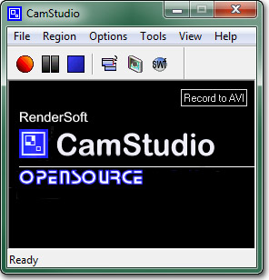
Region 메뉴?�서 Region ???�택?�니?? ?�화????캡처??구역??지?�하??겁니?? Options 메뉴?�서 Video Options �??�택?�고 Video Options ?�?�창???�웁?�다. Compressor ???�하???��??�택?�니?? ?�기?�는 Microsoft Video 1 �??�두�?Quality �?100 ?�로 ?�리겠습?�다. Framerates ?�래?�서 Capture Frames Every �?33 milisecond�? Playback Rate �?30 fps�??�정?�니?? 캡처�?기본값인 200fps ?�??30fps�??�게 ?�니??
Options 메뉴?�서 Video Options �??�택?�고 Video Options ?�?�창???�웁?�다. Compressor ???�하???��??�택?�니?? ?�기?�는 Microsoft Video 1 �??�두�?Quality �?100 ?�로 ?�리겠습?�다. Framerates ?�래?�서 Capture Frames Every �?33 milisecond�? Playback Rate �?30 fps�??�정?�니?? 캡처�?기본값인 200fps ?�??30fps�??�게 ?�니??
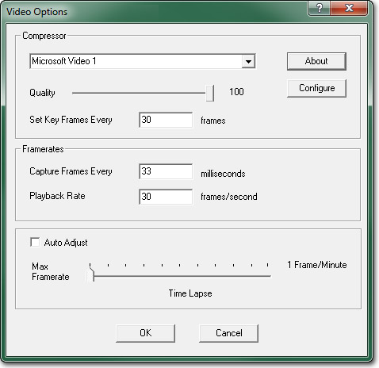
보통 ?�스?�에??Record audio from speakers ?�션???�아가???�상?�겠지�? 지금�? Windows 7 기기?�??문제가 ?�는 ???�니, ?�피커�? 마이???�???�용?�도�??�는 ?�체법???�용?�도�??�겠?�니?? ?�도?�의 ?�운?�에??Recording ?�치�??�택?�니?? ?�제??Stereo Mix (Realtek High Definition Audio) 처럼 ?�운???�치�?찾아 ?�택?�니?? ?�운???�치가 보이지 ?�으�??�클�?��??Show Disable Devices �?Show Disconnected Devices 가 ?�다 켜져 ?�는지 ?�인?�시�?바랍?�다.
?�제??Stereo Mix (Realtek High Definition Audio) 처럼 ?�운???�치�?찾아 ?�택?�니?? ?�운???�치가 보이지 ?�으�??�클�?��??Show Disable Devices �?Show Disconnected Devices 가 ?�다 켜져 ?�는지 ?�인?�시�?바랍?�다.
 ?�택???�운???�치�?기본?�로 ?�정?�니??
?�택???�운???�치�?기본?�로 ?�정?�니??
 ?�운???�치???�???�성창을 ?�기 ?�해 버튼???�릅?�다. listen ??�� ?�택?�고 Playback through this device �??�피커로 ?�택?�니??
?�운???�치???�???�성창을 ?�기 ?�해 버튼???�릅?�다. listen ??�� ?�택?�고 Playback through this device �??�피커로 ?�택?�니??
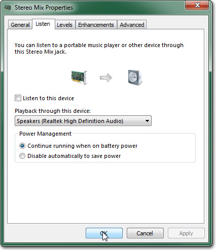
OK �??�릭?�고 ?�?�창???�습?�다. CamStudio?�서 Options > Audio Options 메뉴�??�해 Audio Options for Microphone ???�택?�니?? Audio Capture Device �??�운???�치�??�택?�니??
Audio Capture Device �??�운???�치�??�택?�니??
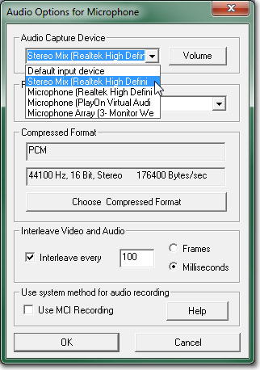
그리고서 Recording Format ??44.1 kHz, stereo, 16-bit �??�택?�니??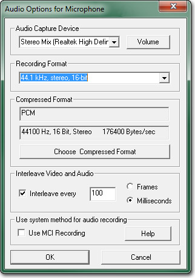
Options 메뉴?�서 Record audio from microphone ???�택?�었?��? ?�인?�니??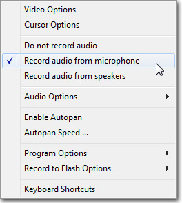
CamStudio ?�업???�료?�어 캡처??준비�? ?�습?�다. Unreal??캡처?�려??맵으�??�행?�킵?�다. 그리�? 버튼???�릅?�다. ?�화?�려??구역???�택?��? ?�으�??�화가 ?�작?��? ?�습?�다. ?�리??뷰포??좌상??코너�??�릭?�고 ?�하??코너까�? ?�래그합?�다. ?�는 ?�안 구역 ?�기�??�인?????�습?�다.
버튼???�릅?�다. ?�화?�려??구역???�택?��? ?�으�??�화가 ?�작?��? ?�습?�다. ?�리??뷰포??좌상??코너�??�릭?�고 ?�하??코너까�? ?�래그합?�다. ?�는 ?�안 구역 ?�기�??�인?????�습?�다.
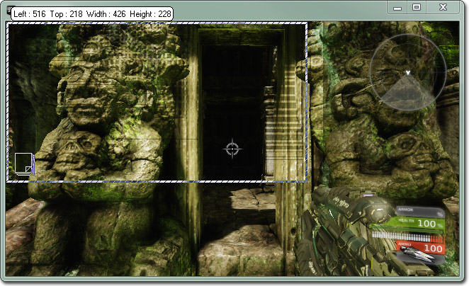
?�택???�자마자 ?�화가 ?�작?�니, ?�네마틱??발동?�키거나 게임?�레?��? ?�작?�면 ?�니?? ?�화가 ?�났?�면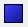
버튼???�러 ?�화�?중�??????�습?�다. 비디?��? ?�?�할 ?�일 ?�름??물어?�니??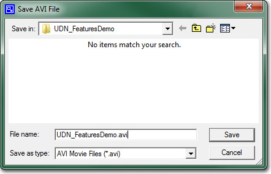
?�간???�간??지??비디??처리가 ?�나�?캡처�??�돌?�볼 ???�는 CamStudio ?�레?�어가 ?�게 ?�니??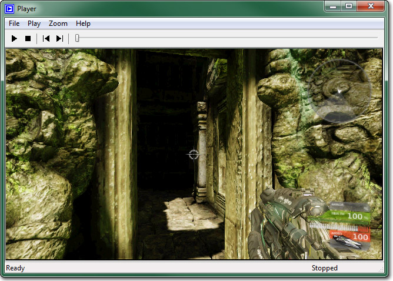
결과가 만족?�럽지 ?��? 경우, 캡처�??�시 ??�????�습?�다. ?�는 비디???��?�??�집?�야 ?�는 경우, 비디???�집 ?�플???�해 ?�요??만큼 ?�집?�면 ?�겠?�니?? 버튼???�릭?�고 메뉴??_Video File_???�택?�니??
버튼???�릭?�고 메뉴??_Video File_???�택?�니??
 Audio ??�� ?�택?�고 목록?�서 Track 1???�택?�니?? Mixdown ??Stereo �? Samplerate �?44.1 �? Bitrate ???�용 최�?치인 160 ?�로 변경합?�다.
Audio ??�� ?�택?�고 목록?�서 Track 1???�택?�니?? Mixdown ??Stereo �? Samplerate �?44.1 �? Bitrate ???�용 최�?치인 160 ?�로 변경합?�다.
 ?�코???�로?�스??걸리???�간?� ?�적?�로 ?�코???�정, ?�코???�는 기기???�능, 비디?�의 길이???�렸?�며, 짧�? 비디?�에???�래 걸리지 ?�습?�다. ?�코???�로?�스�?중단?�려�? 그냥 버튼???�르기만 ?�면 ?�니??
?�코???�로?�스가 ?�나�??�코?�된 비디?��? 찾아 ?�질 ?�스?�용?�로 ?�생??�????�습?�다. 맘에 ?��? ?�으�??�순?�인코딩 ?�정???�조?�하�????�로?�스�?반복?�면 ?�니??
?�코???�로?�스??걸리???�간?� ?�적?�로 ?�코???�정, ?�코???�는 기기???�능, 비디?�의 길이???�렸?�며, 짧�? 비디?�에???�래 걸리지 ?�습?�다. ?�코???�로?�스�?중단?�려�? 그냥 버튼???�르기만 ?�면 ?�니??
?�코???�로?�스가 ?�나�??�코?�된 비디?��? 찾아 ?�질 ?�스?�용?�로 ?�생??�????�습?�다. 맘에 ?��? ?�으�??�순?�인코딩 ?�정???�조?�하�????�로?�스�?반복?�면 ?�니??